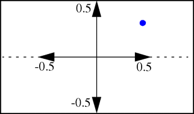
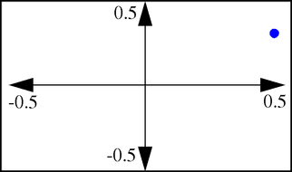

RENDER
SYNOPSIS
Render is the central image-rendering program of the
Raster3D
molecular graphics package.
Render reads an ascii file consisting of several header lines followed by individual
object descriptors. The objects are rendered using a fast Z-buffer algorithm.
Output is to stdout [or optional file] in the form of a pixel image with
24 bits of color information per pixel.
The default output file format is an PNG image sent to stdout.
Additional image file types may be optionally included
during installation of the Raster3D package.
Usage:
input from stdin; output mode controlled from command line
render PNG image to stdout
render -avs [outfile] AVS image to outfile (defaults to stdout)
render -png [outfile] PNG image to outfile (defaults to stdout)
render -jpeg [outfile] JPEG image to outfile (defaults to stdout)
render -sgi [outfile] output to SGI libimage file (defaults to render.rgb)
render -tiff [outfile] output to TIFF file (defaults to render.tif)
Options:
these over-ride contents of input stream header records
-aa use anti-aliasing (SCHEME 4)
-alpha alpha channel in output image (SCHEME 0)
-bg COLOR set background, COLOR is black, white or #RRGGBB
-debug verbose output while running
-draft no anti-aliasing (SCHEME 1)
-fontscale FF multiplier for PostScript label fonts
-gamma GG apply gamma correction GG to output image
-invert invert y axis
-labels render embedded labels to the output file as well
-quality QQ 0 < QQ < 100 jpeg compression parameter (default 90)
-[no]shadow enable or disable shadowing
-size HHHxVVV specify size of output image in pixels
-transparent same as -alpha (SCHEME 0)
-zoom ZZ[%] rescale image by a factor of ZZ
MORE INFORMATION
Render a simple space-filling model coloured by residue type:
cat mycolors.pdb protein.pdb | balls | render > mypicture.png
Display
the same picture on an X-windows display directly using ImageMagick:
cat mycolors.pdb protein.pdb | balls | render | display png:-
Render
and display the same picture using the SGI libimage format:
cat mycolors.pdb protein.pdb | balls | render -sgi picture.rgb
ipaste picture.rgb
Render
a stick-figure model of a cofactor jointly with a ribbon model of a protein.
Note that the header records are generated by the ribbon command in this case;
the -h flag suppresses generation of a second set of header records in the rods
command. The ImageMagick convert command is used to save the resulting image as
a TIFF file.
ribbon -d4 protein.pdb > ribbon.r3d
cat colors.pdb cofactor.pdb | rods -bs -h > cofactor.r3d
cat ribbon.r3d cofactor.r3d | render | convert png:- picture.tiff
If
TIFF support has been built directly into Raster3D, then the previous command
can be modified to produce a TIFF file without conversion:
cat ribbon.r3d cofactor.r3d | render -tiff picture.tiff
- -aa
- Force anti-aliasing (SCHEME 4) regardless of the scheme specified in
the file header
- -alpha
- Force output of transparency information (SCHEME 0) regardless of the scheme
specified in the file header. This only works if the output format
supports an alpha channel (AVS, TIFF, but not JPEG). Note that this
turns off anti-aliasing. This option can be used to produce an image with
a transparent background.
- -bg white|black|#RRGGBB
- Set background color. #RRGGBB is a hexadecimal representation of the
color components.
- -draft
- Turn off anti-aliasing to increase rendering speed.
- -fontscale XX
- Only meaningful in conjunction with the -labels option.
Modifies the interpretation of font sizes during label processing.
If -fontscale is not specified, the program next looks for an
environmental variable FONTSCALE. If neither a command line value or
an environmental variable is found, the program defaults to
-fontscale 3.0, which generates PostScript labels that are
approximately the nominal font size when printed at 300 dpi.
- -help
- Print summary of options.
- -gamma GG
- Apply gamma correction to output image. Gamma > 1 makes it lighter;
gamma < 1 makes it darker.
- -invert
- Invert the image top-to-bottom. This could be necessary
if you are using some odd viewing program.
- -jpeg
- Only if compiled with -DJPEG_SUPPORT. By default
render will produce an AVS-compatible image on stdout. The -jpeg flag will
cause it to output a JPEG image stream to stdout instead.
- -labels
- Process labels (object types 10,11,12)
and embed them in the output image. The text rendering is done via libgd,
so this option only works from png or jpeg output.
- -quality NN
- Only meaningful in conjunction with the -jpeg option;
- -size HHHxVVV
- Override the image size parameters (NTX,NTY,NPX,NPY) in the file header
and produce an output image that is exactly HHH pixels in the horizontal
and VVV pixels in the vertical.
- -sgi [filename.rgb]
- Only if compiled with -DLIBIMAGE_SUPPORT. The -sgi flag
will cause render to output an SGI libimage style *.rgb file instead. In this case
default output is to the file render.rgb, but specifying a file on the command
line will override this default.
sets the output image quality parameter. Allowable values range from 1-100 (default = 90).
- -tiff filename.tiff
- Only if compiled with -DTIFF_SUPPORT.
The -tiff flag will cause render to output a TIFF image to the specified file.
- -transparent
- (same as -alpha) Force output of transparency information.
This only works if the output format supports an alpha channel (AVS, PNG, TIFF,
but not JPEG).
- -zoom ZZ[%]
- Modifies the scale factor TMAT(4,4) in the header records. This does not change
the overall dimensions of the image, just the size of the objects within the image.
ZZ > 1 will make the objects appear larger, ZZ < 1 will shrink them. If the ZZ is
is given as a percentage, then ZZ > 100% enlarges and ZZ < 100% shrinks.
The input to render consists of a single text file containing everything
necessary to prepare the image of a scene consisting of coloured spheres,
cylinders and triangles. The header records contain information global to the
scene being rendered. The header records are followed by individual object
records containing coordinate and color specification for the objects in the
scene. The surface shading of primitive objects (spheres, cylinders, and simple
triangles) is calculated analytically. Sequential triangles forming a
ribbon-like chain are rendered by a more complex algorithm which produces the
appearance of a a smoothly-shaded surface rather than a faceted one [ref:
Merritt & Murphy].
The required header records of a render input file are described below. Except
where noted, each item is on a line by itself in free format. The names are of
variables in the program source code.
- TITLE
- Anything you like, up to 80 characters.
- NTX,NTY
- Number of "tiles" in each direction.
(The image is rendered piecemeal by dividing it into an array of equal
size rectangular tiles.)
The width of the output image in pixels is NTX*NPX by NTY*NPY.
The speed of the program is sensitive to the number of tiles.
However, as a convenience you can set NPX and NPY to zero and use NTX, NTY
to provide the net size of the output image in pixels. In this case the
program will choose the number of tiles itself so that you don't have to
worry about it.
- NPX,NPY
- Number of computing pixels per tile in each direction.
Maximum = 36 (MAXNPX, MAXNPY in render.f). If you set NPX and NPY to zero,
the program will use NTX and NTY as the net size of the image in pixels.
- SCHEME
- Pixel averaging (anti-aliasing) scheme.
Anti-aliasing reduces the jaggedness of edges at the cost of additional
computation. If you are going to matte your images against an externally
generated background, use scheme 0 (matting and anti-aliasing do not mix well).
- Scheme 0
- no anti-aliasing, include alpha blend channel in output image
- Scheme 1
- no anti-aliasing, no alpha channel
- Scheme 2
- anti-alias by averaging 2x2 computing pixels for each output pixel
- Scheme 3
- anti-alias by averaging 3x3 computing pixels for each
2x2 output pixels (obsolete - use scheme 4 instead)
- Scheme 4
- anti-alias as in scheme 3, but header specifies final
raster size rather than computing raster size
(i.e. schemes 0, 1, and 4 produce a NTX*NPX by NTY*NPY pixel image;
scheme 3 produces a (2/3)NTX*NPX by (2/3)NTY*NPY image).
Scheme 3 requires that NPX and NPY be divisible by 3.
Schemes 2 and 4 require that NPX and NPY be divisible by 2.
Images can be previewed using scheme 1 for greater speed, and re-rendered
with anti-aliasing scheme 4 with no change in the output image size. No changes
to NTX, NTY, NPX, NPY are required in this case.
- BKGND
- Background colour (red, green, and blue components, each in
the range 0 to 1).
- SHADOW
- T to calculate shadowing within the scene, F to omit
shadows
- IPHONG
- Phong power (e.g., 25) for specular highlights. A smaller
value results in a larger spot.
IPHONG = 0 disables specular highlighting and all processing of ribbon
triangles
- STRAIT
- Straight-on (secondary) light source contribution (e.g.,
0.15). The primary light source contribution (see also SOURCE below) is given
by PRIMAR = 1 - STRAIT.
- AMBIEN
- Ambient illumination contribution (e.g., 0.05). Increasing
the ambient light will reduce the contrast between shadowed and non-shadowed
regions.
- SPECLR
- Specular reflection contribution (e.g., 0.25).
The diffuse reflection quantity is given by DIFFUS = 1 - (AMBIEN+SPECLR).
Ambient and diffuse reflections are chromatic, taking on the specified colour
of each object, whereas specular reflections are white.
- EYEPOS
- You can think of the image produced by render as
corresponding to a photograph taken by a camera placed a certain distance away
from the objects making up the scene. This distance is controlled by the EYEPOS
parameter. EYEPOS = 4 describes a perspective corresponding to a viewing
distance 4 times the narrow dimension of the described scene.
EYEPOS = 0 disables perspective.
- SOURCE
- Primary light source position (e.g., 1 1 1). This is a
white light point source at infinite distance in the direction of the vector
given (see note on co-ordinate convention below). The secondary light source is
always head-on. Only the primary light source casts shadows.
- TMAT
- Homogeneous global transformation for input objects, given
as a 4x4 matrix on 4 lines just as you would write it if you intended it to be
a postfix (suffix) operator. The upper left 3x3 submatrix expresses a pure
rotation, the lower left 1x3 submatrix gives a translation, the upper right 3x1
submatrix should be zero (otherwise extra perspective is introduced), and the
lower right scalar (h) produces global scaling. Note that the scale factor h
ends up being applied as an inverse; i.e. a larger value of h will result in
shrinking the objects in the picture. Input coordinate vectors [x y
z] are extended with a 1 to make them homogeneous, and then post-multiplied by
the entire matrix; i.e. [x' y' z' h'] = [x y z 1][TMAT], then the ultimate
co-ordinates are [x" y" z"] = (1/h')[x' y' z'].
- INMODE
- Object input mode (1, 2, or 3), where mode 1 means that
all objects are triangles, mode 2 means that all objects are spheres, and mode
3 means that each object will be preceded by a record containing a single
number indicating its type. The Raster3D programs use only mode 3.
- INFMT or INFMTS
- Object input format specifier(s). For object
input modes 1 and 2, there is just one format specifier INFMT for the
corresponding object type, while for mode 3, there are three format specifiers
INFMTS on three lines. The first describes the format for a triangle, the
second for a sphere, and the third for a cylinder. Each format specifier is
either a Fortran format enclosed in parentheses, or a single asterisk to
indicate free-format input.
My picture. (describes a 1280 x 1024 pixel anti-aliased image)
80 64 tiles in x,y (or set these to 1280 1024)
16 16 pixels (x,y) per tile (and set these to 0 0)
4 anti-aliasing level 4; 3x3->2x2
0 0 0 black background
F no shadows cast
25 Phong power
0.25 secondary light contribution
0.05 ambient light contribution
0.25 specular reflection component
4.0 eye position
1 1 1 main light source position (from over right shoulder)
1 0 0 0 view matrix describing input coordinate transformation
0 1 0 0
0 0 1 0
0 0 0 0.6 no translation; enlarge objects in picture by 66% (1/.6)
3 mixed objects
* (free format triangle and plane descriptors)
* (free format sphere descriptors)
* (free format cylinder descriptors)
- Object type 1
- triangle
- x1, y1, z1, x2, y2, z2, x3, y3, z3, red, green, blue
- Object type 2
- sphere
- x, y, z, radius, red, green, blue
- Object type 3
- round-ended cylinder
- x1, y1, z1, R1, x2, y2, z2, R2, red, green, blue
(R1 is the cylinder radius, R2 is currently ignored).
- Object type 4
- not used
-
- Object type 5
- flat-ended cylinder
- x1, y1, z1, R1, x2, y2, z2, R2, red, green, blue
(R1 is the cylinder radius, R2 is currently ignored).
- Object type 6
- plane
- x1, y1, z1, x2, y2, z2, x3, y3, z3, red, green, blue
- Object type 7
- explicit surface normals at vertices of preceding triangle
- u1, v1, w1, u2, v2, w2, u3, v3, w3
Explicit vertex normals for preceding triangle object. This object must
directly follow the triangle object (see also object type 17). The
intended use of this object type is to allow description of arbitrary
molecular surfaces in terms of a triangular mesh.
- Object type 8
- material properties
- These values override the specification of lighting and specular
highlighting in the header records, allowing some objects to have
different surface properties from the rest. The specified values will
apply to all subsequent objects until an object of type 9 is
encountered. The parameters are read in free format from the next
line of the input stream:
- MPHONG
- value >= 0 overrides the global Phong parameter for specular highlighting
- MSPEC
- value >= 0 overrides the global specular scattering contribution
- SR,SG,SB
- RGB triple specifying color of reflected light (by default
all reflections are white), a negative value for any component will
default to the base colour component of the object being rendered
- CLRITY
- (floating point value between 0.0 and 1.0) The degree of
transparency for this material; 0.0 indicates an opaque surface and 1.0
indicates a purely transparent one.
- OPTS(4)
- four additional fields are reserved for future expansion of
the material properties list; these must be present. The first two fields
control alternative algorithms for rendering transparent objects:
- OPT(1) = 0 render all outward-facing layers of a transparent material, even if they occlude each other
- OPT(1) = 1 render only the "top" outward-facing surface of transparent material
- OPT(1) = 2 render both the outward- and inward-facing surface of transparent spheres and cylinders
OPT(2) specifies how net transparency varies as a function of surface normal.
- OPT(2) = 0 empirical function that looks best to me
- OPT(2) = 1 faster empirical function
- OPT(2) = 2 exponential function based on theory (slower)
- OPT(2) = 3 ignore surface normal (transparent objects look flat)
The fourth field is non-zero to signal that additional modifier
records will follow immediately. Each modifier record must constitute a
single line, and OPT(4) states how many of these there will be. For example
- OPT(4) = 2 means that the next two lines contain additional material modifiers
- Object type 8 modifiers
-
Additional modifiers to MATERIAL descriptors (type 8) are now supported.
Each modifier record must constitute a single line of input, and the
total number of such modifier lines must be specified in the final
parameter of the MATERIAL record. Modifiers currently supported include
SOLID and BACKFACE records, as shown in the following example of a 2-
sided material that is solid red on one side and solid blue on the other
side:
# Here is an example of specifying a double sided material
# The MATERIAL record itself specifies an opaque material with PHONG
# value to 25 and specular parameters taken from the header records,
# and says that there are two following modifer lines.
# The SOLID modifier gives an RGB color triple that over-rides colors on
# subsequent objects.
# The BACKFACE modifier specifies a separate RGB color for the other side
# of this material, and sets the Phong control parameter and specular
# component of this surface to zero (i.e. it's a matte blue surface).
8
20. -1. 1. 1. 1. 0.0 0 0 0 2
SOLID 1.0 0.0 0.0
BACKFACE 0.3 0.3 1.0 0 0
Here is the complete list of modifiers currently available, and their parameters
SOLID RED GREEN BLUE
BACKFACE RED GREEN BLUE MPHONG MSPEC
FRONTCLIP ZFRONT
BACKCLIP ZBACK
BOUNDING_COLOR RED GREEN BLUE
BOUNDING_PLANE BPTYPE X Y Z Xnorm Ynorm Znorm
ORTEP_LIKE used to create bounding planes of ellipsoids
See elsewhere for more information on
clipping planes and
bounding planes.
- Object type 9
- terminate special properties
- Terminates previous set of special material properties (object type
8) or isolation from TMAT transformation (object type 15). The rest of
this record is ignored, so object type 9 may also be used as a comment
record. It is preferable, however, to begin pure comments with '#'
rather than '9'.
- Object types 10-12
- Label descriptors
-
Version 3.0 supports rendering labels via the libgd library used to
produce png or jpeg output images.
Object types 10, 11, and 12 are used to specify labels.
Here is an example:
# Force the label coordinates to be interpreted as screen coords
# (obviously you wouldn't do this if you want the label to get the
# same translation/rotation/scaling as other objects do)
15
# Choose a font
10
"Times-Italic" 12. "Center-align"
# specify a label
11
0.0 0.45 0.0 1.0 0.0 0.0
I am a red title centered at the top of the image
# Terminate isolation from coordinate transformation
9
- Object type 10
-
"Font specifier" size "alignment"
Legal fonts specifiers are subject to the details of label processing implementation.
In the context of processing by libgd,
fontname is any font name recogized by libgd,
size is the font size in points (assuming eventual printing at 300 dpi),
alignment is either "Right-align", "Left-align", "Center-align", or "Offset"
(only the first character is checked).
The default is "Times" 10 "Left-align".
- Object type 11
- [XYZ] [RGB]
Label text
(see r3dtops for details of
label text processing and special characters.
- Object type 12
- reserved (single line of text)
-
(If you are developing a higher-level application that will pass
labels to Raster3D for rendering, please contact me so that we can make
sure the protocols are compatible -EAM).
- Object type 13
- Glow light source
- This is a colored, non-shadowing, light source with
finite [x y z] coordinates and a limited range of illumination. Control
parameters are read in free format from a single line of input following
the line specifying the object type.
- GLOWSRC(3)
- [x y z] coordinates of light source
- GLOWRAD
- limiting radius of light source (see GOPT)
- GLOW
- fractional contribution (0.0 - 1.0) of glow light to total lighting model
- GOPT
- (integer 0/1/2/3/...) - controls functional form in which
limiting radius is applied [under development]
- GPHONG
- Phong parameter controlling specular highlights from glow light source
- GLOWCOL(3)
- RGB triple specifying color of glow light source
- Object type 14
- quadric surface
- x, y, z, limiting_radius, red, green, blue, A, B, C, D, E, F, G, H, I, J
Quadric surfaces include spheres, cones, ellipsoids, paraboloids, and
hyperboloids. The motivation for this code was to allow rendering
thermal ellipsoids for atoms, so the other shapes have not been
extensively tested. A quadric surface is described by 10 parameters (A
... J). Although these parameters are sufficient to describe a quadric
surface located anywhere, for efficiency during rendering it is also
useful to know the center and a bounding sphere. So by convention we
require that (A...J) describe a surface centered at the origin, and add
additional parameters x, y, z to add a translation component. Therefore
a quadric surface descriptor to render has the 17 parameters listed above.
The surface itself is the set of points for which Q(x,y,z) = 0 where
- Q(x,y,z) = Ax2 + By2 + Cz2 + 2Dxy + 2Eyz + 2Fzx + 2Gx + 2Hy + 2Iz + J
Points further from the origin (prior to translation!) than the
limiting radius are not rendered.
- Object type 15
- begin isolation from TMAT transformation
- Objects following this descriptor are interpreted as being in an
absolute coordinate system centered at the origin and having unit extent
in X, Y, and Z. If the image is square, the coordinates run from
-0.5 to +0.5 on both X and Y. If the image is rectangular, coordinates
run from -0.5 to +0.5 on the shorter dimension.
The rotation and translation described by the TMAT
matrix is not applied. This isolation from TMAT applies to subsequent
objects until an object of type 9 is encountered.
The coordinate system used following object type 19 is similar except that
the horizontal and vertical scales are treated separately, so the the point
[-.5,+.5] is always at the top left corner. In both figures below the blue
cross is drawn at coordinates [+0.5,+0.3].
|  |
 |
| Coordinate system defined by object 15 |
Coordinate system defined by object 19 |
- Object type 16
- Global properties
- Object type 16 is always followed by a single record that affects the rendering
of the entire scene. The only global properties supported at the moment
are listed below.
FOG allows depth-cueing using either a linear or an exponential
model of fog density. A record simply consisting of the keyword FOG will
produce reasonable depth-cueing (linear decrease in intensity front closest
object to farthest object). If you need to control the depth-cueing indepently
from the specific rendered objects in a scene (i.e. to keep the depth-cueing
consistent between frames of an animation) then you should specify explicit
values for fogfront, fogback and fogden.
FOG fogtype fogfront fogback fogden
- fogtype
- 0 = linear multiplier = fogden * (fogfront - Z) / (fogfront - fogback)
- 1 = exponential multiplier = 1. - exp( -fogden * (fogfront - Z) / (fogfront - fogback) )
- fogfront
- 0 = Z coord of front object, else fraction of front clipping plane
- fogback
- 0 = Z coord of back object, else fraction of rear clipping plane
- fogden
- (see equations for linear and exponential models controlled by fogtype);
fogden=0.0 will default to some reasonable value
BACKCLIP zback
- zback
- Z coord of rear clipping plane for all objects; in original units
of original coordinate system, but relative to the center of the
transformed coordinate system.
That means if you are working in PDB coordinates, then everything
more than zback Angstroms behind the center is clipped.
FRONTCLIP zfront
- zfront
- Z coord of front clipping plane for all objects; in original units
of original coordinate system, but relative to the center of the
transformed coordinate system.
That means if you are working in PDB coordinates, then everything
more than zfront Angstroms in front of the center is clipped.
ROTATION Matrix
- Matrix
- 3x3 rotation matrix applied by post-multiplication after the coordinate
transformation in TMAT. This is the transpose of the equivalent rotation
if it were specified in TMAT. It applies to all following coordinates
in the input stream.
TRANSLATION X Y Z
- X Y Z
- 3 element translation applied after the coordinate transformation
in TMAT. It applies to all following coordinates
in the input stream.
- Object type 17
- explicit coloring at vertices of preceding triangle or cylinder
- R1 G1 B1 R2 G2 B2 R3 G3 B3
Normally a triangle is colored uniformly in the color specified by the
RGB triple in the TRIANGLE record itself. Using this additional object,
however, you can specify a separate color for each vertex of the triangle.
Points in the interior of the triangle are colored by interpolation using
the vertex colors. This is commonly used in conjunction with explicit
vertex normals (object type 7) to describe a smooth surface in terms of a
triangular mesh. In this case the component triangles of the surface are
described by three successive objects of types 1, 7, and 17.
(The ordering 1, 17, 7 is also acceptable).
As of version 2.4j this mechanism may also be used to interpolate colors
along the length of a cylinder. In this case the third RGB triple is ignored.
- Object type 18
- explicit transparency at vertices of preceding object
- Trans1 Trans2 Trans3
Normally an object is transparent only if it belongs to a trasparent material.
Using this additional object, however, you can specify a separate degree of
transparency at each vertex of an object. The transparency at points in the
interior of the object are then determined by interpolation. All three values
(Trans1 Trans2 Trans3) are required; Trans3 is ignored for a cylinder, Trans2
and Trans3 are both ignored for a sphere.
- Object type 19
- begin isolation from TMAT transformation
- Similar to Object type 15, except that the coordinate
scale along both x and y always runs from -0.5 to +0.5, regardless of the
aspect ratio of the rendered image.
- Object type 0
- force end of input stream (optional)
- Further records in input file will not be read.
COMMENTS
At any point in the input stream to render where an object descriptor would be legal, it is also legal to insert a line beginning with the `#' character. In this case the line is ignored, and may be used as a comment. Earlier versions of the program recommended using object type 9 as a comment delimiter, but this has the potential disadvantage of prematurely terminating the scope of a special material.
FILE INDIRECTION
At any point in the input stream to render where an object descriptor
would be legal, it is also legal to insert a line beginning with `@'. In
this case the remainder of the line is interpreted as the name of a file
from which further input is taken. This mechanism makes it possible to
re-use standard objects in multiple rendered scenes, e.g. a set of
bounding planes or standard definitions of material properties. When
input from this level of file indirection is terminated by encountering
an object descriptor of type 0, control returns to the previous input
stream. Multiple levels of file indirection are possible.
The requested file is first searched for relative to the current directory.
If this search fails, the file is searched for relative to the directory
specified by the environmental variable R3D_LIB.
Typically this would be set via a command such as
csh/tcsh: setenv R3D_LIB /usr/local/src/raster3d/materials
sh/ksh: R3D_LIB=/usr/local/src/raster3d/materials; export R3D_LIB
The following records describe a single red triangle and a single blue sphere.
The blue sphere is affected by whatever material descriptor is in the file
material1.r3d
1
-.1 0. 0. .1 0. 0. 0. -.2 0.5 1.0 0.0 0.0
@material1.r3d
2
0.3 0.3 0.0 0.1 0.0 0.0 1.0
9 End material1
0
ERROR MESSAGES
- Possible shadowing error NSXMAX = xxx
-
This is usually caused by an object which extends far out of
the field of view, for example a plane surface that extends to infinity.
In most cases the shadowing "error" refers to a shadow which lies
outside of the image entirely.
INCREASING THE ARRAY SIZES IN RENDER:
As of Version 3.0, this should no longer be necessary.
Arrays are expanded dynamically.
Originally written by David J. Bacon. Extensions, revisions, and modifications
by Ethan A Merritt.
 Back to top
Back to top
 Raster3D homepage
Raster3D homepage